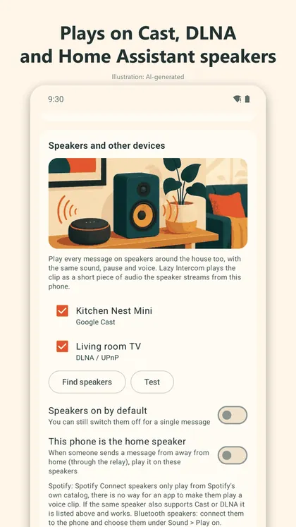

Play a voice message on a speaker at home
Besides the family phones, Lazy Intercom can play your message on speakers and TVs around the house. This guide explains how that works for Google Cast, DLNA and Home Assistant, what does not work today and how well it has been tested.
What happens when you send a message
The phone that sends the message makes the voice clip available to your home network and tells each chosen speaker where to fetch and play it. The order is the same as on the phones: a sound effect first, then a pause, then your voice. The clip is shared by a short-lived link on the sending phone and goes to the speaker over your local network.
What works
- Google Cast devices. Speakers and TVs with Google Cast built in. The app talks to them directly.
- DLNA / UPnP renderers. The app finds them on your network by discovery. Many smart TVs and network speakers support DLNA, but support differs from model to model.
- Home Assistant media players. You enter the address of your Home Assistant and a long-lived access token in Settings. The token stays on the phone. Home Assistant lights can also flash as a silent alert.
If one box speaks both Cast and DLNA, the app merges them into one entry in the list.

Set up the speakers
Open the Speakers screen to see the devices the app has found on your network. Speakers and TVs need to be on the same home network as the phone that sends the message. Before you rely on it, send a short test message while you stand next to the speaker.
A speaker helps when the person is not wearing headphones, for example in the kitchen, the garden room or the hall. It does not replace the phone message. The best setup is both: phones for people with earbuds in and speakers for shared spaces. A short sound effect and a pause, 3 seconds by default, give people time to look up before your voice starts.
What does not work today
- Spotify Connect speakers. Spotify gives apps no way to play other audio on a Spotify Connect speaker.
- AirPlay. It is not supported.
If the same device also speaks Cast or DLNA, or is available in Home Assistant, it can still work that way.
Using speakers when you are away
A phone marked as a home speaker plays messages that arrive through the optional relay on the speakers when the sender is away from home. The relay needs your own free Azure Web PubSub resource, and it does not store messages for phones that are offline.
How well is it tested?
Lazy Intercom is new. The Cast and DLNA paths have been checked against simulated speakers on an Android emulator, not yet on a range of real speakers, so results on your devices may vary. If a speaker does not work for you, or does, tell us at kalmariumservices@gmail.com and we will look into it.
Questions, answered
Which speakers can play the messages?
Google Cast devices, DLNA / UPnP renderers and Home Assistant media players. Spotify Connect speakers cannot play voice clips and AirPlay is not supported.
Can people with an iPhone hear the messages?
The app is Android only, so they cannot run it. They can still hear you when the message plays on Cast, DLNA or Home Assistant speakers.
Do I have to use speakers?
No. Speakers are optional. The main use is playing messages on the other family phones, even with the screen off and headphones in.